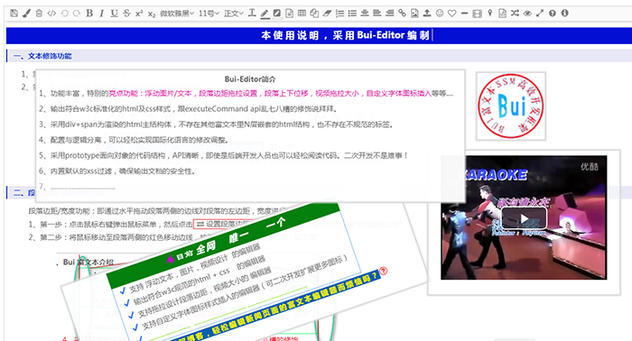
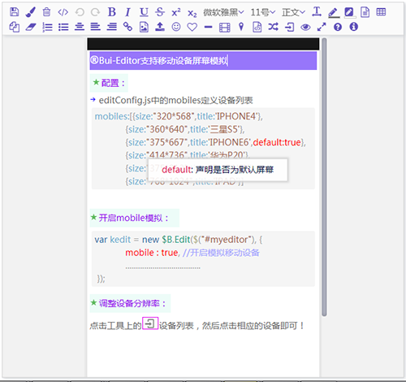

一、事件背景：
我最近开源了一个个人耗时半年打造的富文本及一套适用于web后台的ui框架，在gitee上受到网友们的关注，部分网友对我采用jquery的技术栈提出了质疑。总结起来：无非是jquery已经落后，不久将死。甚至有少数网友很激进：非vue技术栈，你不应该加入我这个群，不管你做得多好。对应这个事情，首先我一般不反驳，因为我对vue，jquery有自己的应用场景度量。但是对于这种不分场景应用而盲目赶潮流的观点，我是持否定态度的。
为此我想有必要通过这篇文章，说明一下：我为什么用jquery来写vue和web后端ui框架，而不用vue。在文章开始前，先贴一下我开源的富文本：
gitee： https://gitee.com/kevin-huang/Bui-Editor-public
浮动文本/图片/视频功能

绘制流程图功能
移动设备模拟功能

通过上述富文本的截图，可以大概了解到这个富文本的功能很丰富，许多功能可以说是全网富文本里面的only-one。这么复杂的应用对技术栈的选择很重要，良好适配的技术栈可以在设计上，编码上给开发者更大的自由度，同时可以避免很多繁杂的实现，提升代码质量，降低后期的维护，运营的成本。
二、我的观点：
1、vue技术栈适用于移动端应用开发，对于pc端web应用，vue技术栈并不见得优于传统技术栈(相对于vue来说是传统的)。
2、jquery是目前dom操作的王者，除此无二，jquery和vue不可比较，他们各自擅长的场景不一样。
3、复杂应用，原生JavaScript + jquery是比较好的技术栈组合，优于vue技术栈。
三、jquery、vue技术栈诞生背景，擅长场景说明
jquery：
诞生背景
1、jquery诞生于2006年，它诞生的背景是浏览器的dom操作繁杂，各种浏览器api不统一。市场需要一个前端JavaScript库解决dom操作的痛点。
2、jquery诞生的年代，移动应用还在萌芽，它的设计实现都是面向pc端的，当时的前端技术范畴也还没有mvvm(数据驱动)的思想，它为操作dom而生。
擅长场景：
dom操作为主的场景，如富文本，流程设计器，这些应用需要对dom进行大量的操作，jquery最合适不过。
对于这种场景，vue的编程规范会造成设计实现上的束缚，其双向绑定在这里也是多余的，完全没有用武之地！
缺点：
1、jquery没有mvvm思想，不能解决移动端带宽、性能的痛点。
2、jquery没法实现数据驱动开发，还需要开发者编写dom读写操作。
vue：
诞生背景
1、vue的诞生之前，已经有了许多成熟的mvvm框架，如backbone、angular，他们都是在一些数据驱动的需求场景中得到很好的应用，但也并没有像vue被开发者如此着迷。
2、backbone、angular既然已经有了数据驱动的实现，为何没有像vue那样火呢，因为他们要么比较笨重，要么还没有解决移动端应用的痛点(带宽、性能)。
3、vue可以说是为移动应用而生，轻量，其设计的虚拟dom解决移动设备频繁触发浏览器刷新而引起的性能/电量问题，其设计的单页打包(webpack)模式，解决了跳转需要网络请求的带宽痛点。
擅长场景：
1、数据驱动的双向绑定场景，特别是表单读写，可以说解放了表单读写对dom的操作编程。
2、移动应用场景，通过双向绑定，虚拟dom、webpack打包，解决移动端web应用的设备性能/电量、带宽痛点。
缺点：
1、采用数据驱动，没有灵活的dom操作，不适用于dom操作为主的应用场景。
2、在复杂应用中，大量的dom监听、data状态联动维护并不是一种好的机制。
3、webpack打包方式解决了移动应用的痛点，但也带来了发布后，难以跟踪定位问题，没法即刻修改已经在线页面的缺点。
4、学习成本相对传统技术栈高一些，对团队的前端知识要求也相对高一些。
四、vue应用场景说明
pc端web应用场景
1、pc端没有移动端性能、带宽的限制，采用vue技术栈，反而带来了开发环境繁杂、学习额外的非w3c规范的web知识、发布后难以定位跟踪问题、没法即刻修改在线页面这些缺点。
2、pc端的应用，大多是普通的表单开发应用，除此之外基本都是展示类型的页面，个人认为除了表单的双向绑定，监控类ui的数据联动，其他如ui表现/结构的编程采用vue有点多余。
移动端应用场景
1、移动应用场景，对性能、带宽有要求，移动设备的特点也决定了其在问题跟踪定位，更新部署方面与pc端有差异。
2、vue技术栈应用于移动应用场景具有天生的设计实现优势。
我的总结：
1、 pc端采用传统的ui技术栈，同时在传统的基础上引入轻量级mvvm方案解决表单读写开发编程，即优于vue技术栈。这也Bui会实现一个min-mvvm的初衷。
2、移动端应用，毫无疑问，采用vue技术栈是王道。
欢迎登陆我的demo网站，体验可能是全网最强大的富文本应用：